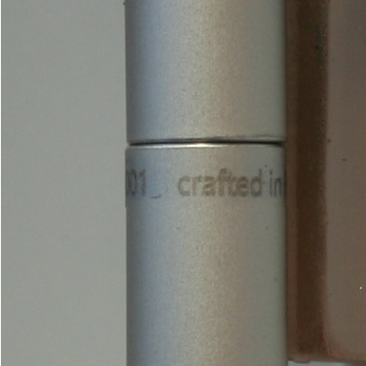
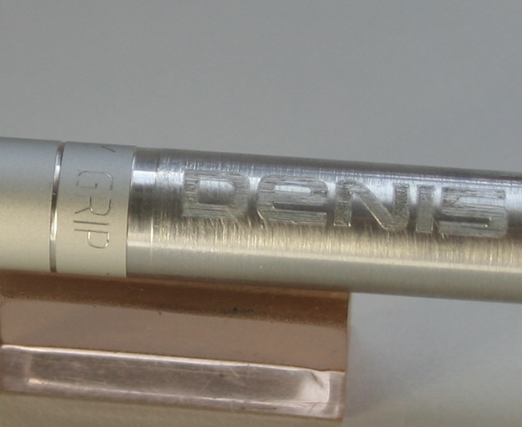
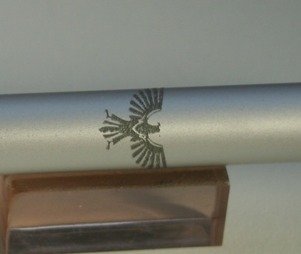
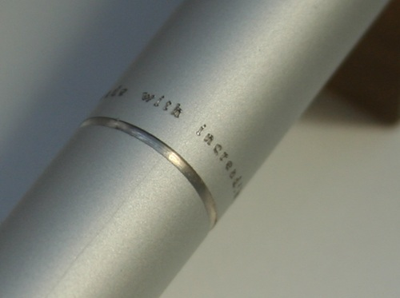
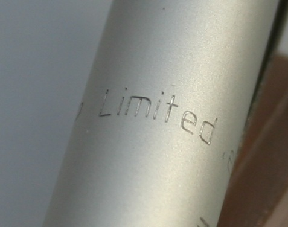
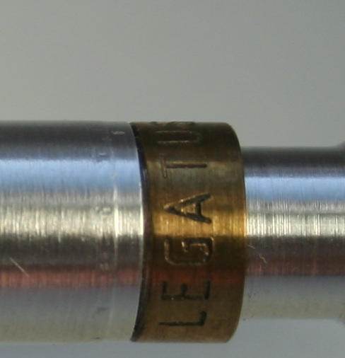

|
GRIP Technology Pens combine traditional craftsmanship with modern precision engineering. Each pen is crafted from high-quality metals, polished and finished by expert artisans. Our technology ensures smooth, reliable writing and long-lasting durability. Every detail, from the nib to the body, is designed to reflect luxury and precision. Every limited edition pen embodies elegance, innovation, and an unparalleled writing experience. |
Built from the same material as planes, it is durable, lightweight and never rust or change colour.
Built with systematic precision to ensure quality and long life to all mechanical parts.
Mechanics is independent from the cartridge tip shape, so some models can take different cartridges (with or without small modifications).
Possibility for unique engravings and custom scripts on the surface to ensure authenticity and high level of personalisation.
We produce only in Limited editions, so your pen is truly unique.
Modern design with grip surfaces like on industrial machine and scientific equipment. Highly reliable mechanism packed in comfortable shape.
Material is environmentally friendly with no degradation over time.
Customisation Techniques
Here we show some techniques for customisation. Each custom pen can have any combination of them including text and pictures. Note that some models are coming with pre-defined engravings.
 |
LASER ENGRAVING This text is laser engraved. The height is 2.5mm and it is made on rotational axis. We have found a way to deposit carbon behind and inside the anodised layer of the aluminium, so the text is scratch resistant and cannot be removed with chemicals. The final line is not completely black, but rather dark grey and not as sharp as mechanical engraving. However, the surface is completely flat on touch since no mechanical intervention is applied and the anodised layer is not removed. |
 |
LINE BY LINE ENGRAVING This text has been engraved with diamond tool line by line. The final result is highly reflective layer, which sometime acts as prism and reflects in different colours. It is deep enough to provide good visual effect. Usually visible from distance this technique provides highly visible effects. |
 |
DIAMOND DRAG ENGRAVING This technique uses diamond tip to remove the anodising layer and make sharp deep scratch into the metal. The result is always dark visual effect with very high resolution. It is very useful for very small engravings as this eagle ( 10 mm high) for example. |
 |
SURFACE WRITING Very common way to increase the resolution of the text is to use 15-30 degree diamond tip. The text here is less than 1mm high and the line is only 0.1mm deep into the material. |
 |
TIP DRAG WRITING This sign uses big letters, but the line is about 0.1 mm wide, which makes the text only visible from short distance. |
 |
FLAT MILL ENGRAVING This technique is using flat mill or sharp mill to remove the surface. It is used for rough cutting of letters. Due to the mechanical nature of the process this is not suitable for very fine details, but rather deep engravings. As example these are 3mm letters engraved on brass using this technique. |